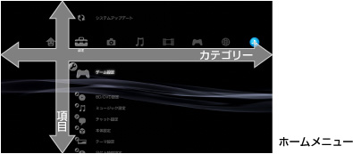
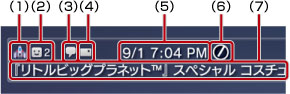
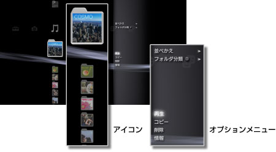
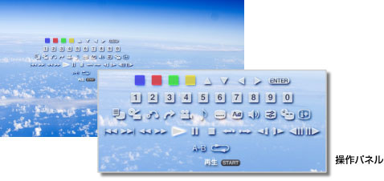

XMB™の基本操作 > XMB™（クロスメディアバー）の基本操作
XMB™（クロスメディアバー）の基本操作
XMB™の使いかた
PS3™には、XMB™（クロスメディアバー）というユーザーインターフェースが搭載されています。横列はPS3™の機能をカテゴリーで表し、縦列は各カテゴリーで実行できる項目を表します。

| 方向キー | カテゴリー／項目を選びます。 |
|---|---|
 ボタン ボタン |
選んだ項目を決定します。 |
 ボタン ボタン |
操作を取り消します。 |
 ボタン ボタン |
オプションメニュー／操作パネルを表示します。 |
| PSボタン | XMB™を表示します。 |
コンテンツの再生方法
再生したいディスクや記録メディア内のコンテンツを選び、ボタンを押します。ボタンで再生を止められます。
ヒント
お使いのPS3™によっては、記録メディアを使うときに別売りのUSBアダプターなどが必要になる場合があります。
インフォメーションパネル
XMB™の画面右上のインフォメーションパネルでは、オンライン状態のフレンドやメッセージの受信状況、What's Newの情報などが確認できます。

(1) |
アバター* |
|---|---|
(2) |
オンライン状態のフレンドの数* |
(3) |
新着のテキストチャット* |
(4) |
メッセージの受信状況 |
(5) |
日付と時刻 |
(6) |
ビジーアイコン |
(7) |
What's Newの情報 |
* PSNSMにサインインしているときだけ表示されます。
オプションメニューの使いかた
アイコンを選んでボタンを押すと、オプションメニューが表示されます。ボタンで表示／非表示を切りかえられます。

オプション項目の例
カテゴリーや項目によって、オプションメニューでできることが異なります。
| 再生／起動／表示 | コンテンツを再生します。 |
|---|---|
| ディスク取り出し | ディスクを取り出します。 |
| 削除 | コンテンツを削除します。 |
| コピー | コンテンツを本体ストレージに取り込んだり、記録メディアに書き出したりします。*1 |
| 情報 | コンテンツの情報を表示します。タイトル名など、内容を編集できるものもあります。 |
| プレイリストに追加 | コンテンツをプレイリストに追加します。 |
| すべて表示 | 記録メディアやUSBマスストレージ機器に保存されているフォルダーをすべて表示します。*1 |
| 並べかえ | 名前順や日付順などに並べかえます。 |
| フォルダー分類 | アルバム別やフォーマット別などに分類方法を変更します。*2 |
| 選択削除 | 削除したいコンテンツを選択し、まとめて削除します。 |
| 選択コピー | コピーしたいコンテンツを選択し、まとめてコピーします。 |
| *1 |
お使いのPS3™によっては、記録メディアを使うときに別売りのUSBアダプターなどが必要になる場合があります。 |
|---|---|
| *2 |
分類に必要な情報がないコンテンツは、［未設定］フォルダーに分類されます。また、コンテンツによっては分類されないものがあります。 |
操作パネルの使いかた
コンテンツを再生中にボタンを押すと、操作パネルが表示されます。ボタンで表示／非表示を切りかえられます。再生するコンテンツによって、操作パネルの項目は異なります。

同時に複数の機能を使う
PS3™では、同時に複数の機能を楽しめます。 （ミュージック）で音楽を再生しながら
（ミュージック）で音楽を再生しながら （フォト）で画像を表示したり、
（フォト）で画像を表示したり、 （ネットワーク）でインターネットを楽しんだりできます。
（ネットワーク）でインターネットを楽しんだりできます。
例） （ミュージック）で音楽を再生しながら、（フォト）で画像を表示するとき
1. |
|
|---|---|
2. |
PSボタンを押す。 |
3. |
|
ヒント
- スーパーオーディオCDを再生中や
 （設定）＞
（設定）＞ （ミュージック設定）＞［出力周波数］を［44.1 / 88.2 / 176.4 kHz］に設定しているときは、（ミュージック）と他の機能を同時に楽しむことはできません。
（ミュージック設定）＞［出力周波数］を［44.1 / 88.2 / 176.4 kHz］に設定しているときは、（ミュージック）と他の機能を同時に楽しむことはできません。 - 再生するコンテンツの種類によっては、同時に複数の機能が使えないものがあります。
重要
スーパーオーディオCDは、一部のPS3™では再生できません。詳しくは、［再生できるディスクの種類について］をご覧ください。